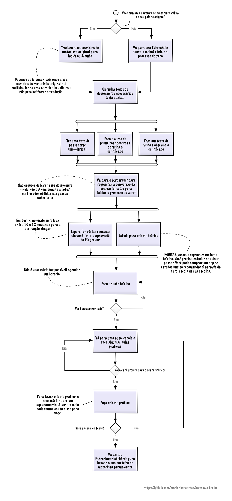

Obtendo uma carteira de motorista
Como na maioria dos processos oficiais na Alemanha, obter uma carteira de motorista requer tempo e paciência. Há vários passos envolvidos e o processo pode ser afetado por diversos fatores:
- Você já tem uma carteira de motorista de outro país?
- Em que país sua carteira foi emitida?
- Sua carteira ainda está válida?
Visão geral do processo
Abaixo você irá encontrar uma visão geral do processo para obter uma carteira de motorista na alemanha.

Testes para a carteira de motorista
Há dois testes que você terá que fazer, dependendo da validade de sua carteira atual, do país e do estado em que ela foi emitida:
- Teórico (ex. teste escrito)
- Prático (ex. teste de direção)
O teste teórico requer que você estude um pouco mais de 1000 questões. 30 delas serão selecionadas aleatoriamente para o teste. Cada questão vale de 2 a 5 pontos, dependendo da importância da pergunta. Quando você erra a questão, a pontuação associada a ela é contada. Para passar no teste você deve contar um máximo de 10 pontos. Você pode escolher o idioma da prova (e.g inglês, alemão ou português de portugal). Acabei optando por fazer a prova em inglês, pois existem muitas diferenças entre o português de portugal e o português brasileiro (há bons exemplos disso neste excelente post aqui).
Você fará um teste digital, possivelmente em um tablet.
A maior parte das autoescolas (Fahrschule) fornecem aplicativos para smartphone que permitem que você estude as 1000+ questões requeridas. As perguntas serão idênticas (ou quase) às que aparecerão no teste teórico. Pode haver pequenas diferenças dependendo do aplicativo que você usará para estudar.
As questões teóricas são atualizadas a cada três meses, portanto é bom estudar rápido para não ter que estudar novas questões.
Tradução da sua carteira atual
Dependendo de onde sua carteira foi emitida, você pode ter que traduzí-la para o alemão. Carteiras de motorista brasileiras (ou em inglês) não precisam ser traduzidas. Apesar disso, em algumas cidades/Bürgeramts o(a) funcionário(a) pode solicitar a tradução da carteira para inglês (eles nem sempre sabem quando é obrigatório ou não). No meu caso, solicitaram, eu falei que não era necessário e não tive problema algum - consegui a aprovação para transferir a carteira brasileira para cá.
| Local | Custo Aprox. | Tempo de espera | Observações |
|---|---|---|---|
| ADAC | €35 | approx. 10 dias (ADAC vai ficar com a sua carteira de motorista durante este período) | Outra pessoa pode buscar a sua carteira/tradução se ela levar seu passaporte. |
Antes de submeter sua solicitação no Bürgeramt
Você deve completar os seguintes passos antes de ir ao Bürgeramt. Note que as empresas mencionadas abaixo são meros exemplos e não recomendações. É recomendado que você pesquise cada empresa antes de adquirir seus serviços para determinar sua validade, qualidade e nível de inglês:
- Tradução / Veja acima
- Exame de vista / Qualquer ótica (e.g. Fielmann)
- Foto / Qualquer loja de fotos que tire fotos de passaporte
- Curso de primeiros socorros (Erste Hilfe):
- M-A-U-S
- Ersthelfer.tv
- Erste Hilfe Kurs
- e outras
- Autoescola (Fahrschule) / Você precisa assinar com alguma auto-escola antes de ir ao Bürgeramt
Notas sobre o Bürgeramt
- Garanta que você escolheu "Manual Transmission" em seu formulário caso queira dirigir/alugar carros com transmissão manual. Se você selecionar "Automatic Transmission", você só poderá dirigir/alugar carros com transmissão automática. Você também fará as aulas e teste práticos usando uma transmissão manual.
Custos aproximados
| Etapa | Custo aproximado |
|---|---|
| Teste de visão | €7 |
| Foto para a carteira de motorista | €10 |
| Curso de primeiros-socorros (Erstehilfe Kurs) | €35 |
| Bürgeramt Application | €43 |
| Prova teórica | €23 |
| Prova prática | €92 |
| Fahrschule (Autoescola) | Depende da escola e de que material ou aulas você precisa |
Links úteis
Berlin.de (German language)
- Localizações de Bürgeramts
- Umschreibung einer ausländischen Fahrerlaubnis / Trasferindo uma carteira estrangeira:
- Fahrerlaubnis / Carteira de motorista
- Mais sobre como transferir sua carteira de motorista
- Exemplo de foto (PDF para download)
- Localizações de Bürgeramts no Mitte